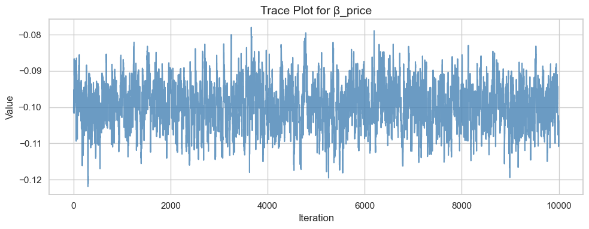

Show Code
import pandas as pd
import numpy as np
df = pd.read_csv('conjoint_data.csv')
df.head()| resp | task | choice | brand | ad | price | |
|---|---|---|---|---|---|---|
| 0 | 1 | 1 | 1 | N | Yes | 28 |
| 1 | 1 | 1 | 0 | H | Yes | 16 |
| 2 | 1 | 1 | 0 | P | Yes | 16 |
| 3 | 1 | 2 | 0 | N | Yes | 32 |
| 4 | 1 | 2 | 1 | P | Yes | 16 |
import pandas as pd
import numpy as np
df = pd.read_csv('conjoint_data.csv')
df.head()| resp | task | choice | brand | ad | price | |
|---|---|---|---|---|---|---|
| 0 | 1 | 1 | 1 | N | Yes | 28 |
| 1 | 1 | 1 | 0 | H | Yes | 16 |
| 2 | 1 | 1 | 0 | P | Yes | 16 |
| 3 | 1 | 2 | 0 | N | Yes | 32 |
| 4 | 1 | 2 | 1 | P | Yes | 16 |
brand_dummies = pd.get_dummies(df['brand'], prefix='brand')
brand_dummies.drop('brand_H', axis=1, inplace=True)
ad_dummies = pd.get_dummies(df['ad'], prefix='ad')
ad_dummies.drop('ad_No', axis=1, inplace=True)
df_processed = pd.concat([df, brand_dummies, ad_dummies], axis=1)
df_processed.drop(columns=['brand', 'ad'], inplace=True)
df_processed| resp | task | choice | price | brand_N | brand_P | ad_Yes | |
|---|---|---|---|---|---|---|---|
| 0 | 1 | 1 | 1 | 28 | True | False | True |
| 1 | 1 | 1 | 0 | 16 | False | False | True |
| 2 | 1 | 1 | 0 | 16 | False | True | True |
| 3 | 1 | 2 | 0 | 32 | True | False | True |
| 4 | 1 | 2 | 1 | 16 | False | True | True |
| ... | ... | ... | ... | ... | ... | ... | ... |
| 2995 | 100 | 9 | 1 | 12 | False | False | False |
| 2996 | 100 | 9 | 0 | 8 | False | True | True |
| 2997 | 100 | 10 | 0 | 28 | True | False | True |
| 2998 | 100 | 10 | 0 | 24 | False | False | False |
| 2999 | 100 | 10 | 1 | 16 | False | False | False |
3000 rows × 7 columns
import numpy as np
print("NumPy version:", np.__version__)NumPy version: 1.26.4from scipy.optimize import minimize
import numpy as np
import pandas as pd
import math
vector_exp = np.vectorize(math.exp)
# 明确设置这些变量
X_cols = ['brand_N', 'brand_P', 'ad_Yes', 'price']
X = df_processed[X_cols].to_numpy()
y = df_processed['choice'].values
tasks = df_processed.groupby(['resp', 'task']).ngroup().values
n_tasks = len(np.unique(tasks))
# 定义 log-likelihood 接收所有必要参数
def make_neg_log_likelihood(X, y, tasks, n_tasks):
def neg_log_likelihood(beta):
beta = np.asarray(beta) # 强制转换为 numpy array
utilities = X @ beta
exp_util = vector_exp(utilities)
# 按 task 分组求和
task_sums = np.zeros(n_tasks)
for t in range(n_tasks):
task_sums[t] = np.sum(exp_util[tasks == t])
prob = exp_util / task_sums[tasks] # 广æ’求解æ¯ä¸€è¡Œçš„分æ¯
log_likelihood = np.sum(y * np.log(prob + 1e-12)) # åŠ å°å¸¸æ•°é˜² log(0)
return -log_likelihood
return neg_log_likelihood
# æ„建函数（æ¤æ—¶å‡½æ•°â€œè®°ä½â€äº† X, y, tasks）
neg_ll = make_neg_log_likelihood(X, y, tasks, n_tasks)
# 初始值
init_params = np.zeros(X.shape[1])
# 开始优化
result = minimize(neg_ll, init_params, method='BFGS')
# æå–å‚数估计ä¸æ ‡å‡†è¯¯å·®
beta_hat = result.x
hessian = result.hess_inv
se = np.sqrt(np.diag(hessian))
# 置信区间
z = 1.96
conf_int = np.vstack([
beta_hat - z * se,
beta_hat + z * se
]).T
# 打印结果
print("Parameter Estimates and 95% Confidence Intervals:")
for name, b, s, (low, high) in zip(X_cols, beta_hat, se, conf_int):
print(f"{name:>10}: {b:.4f} (SE={s:.4f}) 95% CI: [{low:.4f}, {high:.4f}]")Parameter Estimates and 95% Confidence Intervals:
brand_N: 0.9412 (SE=0.1173) 95% CI: [0.7113, 1.1711]
brand_P: 0.5016 (SE=0.1213) 95% CI: [0.2638, 0.7394]
ad_Yes: -0.7320 (SE=0.0887) 95% CI: [-0.9059, -0.5581]
price: -0.0995 (SE=0.0063) 95% CI: [-0.1119, -0.0870]import math
vector_exp = np.vectorize(math.exp)
X_cols = ['brand_N', 'brand_P', 'ad_Yes', 'price']
X = df_processed[X_cols].to_numpy()
y = df_processed['choice'].values
tasks = df_processed.groupby(['resp', 'task']).ngroup().values
n_tasks = len(np.unique(tasks))
def log_likelihood(beta):
beta = np.asarray(beta)
utilities = X @ beta
exp_util = vector_exp(utilities)
task_sum = np.bincount(tasks, weights=exp_util)
prob = exp_util / task_sum[tasks]
return np.sum(y * np.log(prob + 1e-12))
def log_prior(beta):
b1, b2, b3, b4 = beta
prior1 = -0.5 * (b1 ** 2) / 5
prior2 = -0.5 * (b2 ** 2) / 5
prior3 = -0.5 * (b3 ** 2) / 5
prior4 = -0.5 * (b4 ** 2) / 1
return prior1 + prior2 + prior3 + prior4
# log-posterior = log-likelihood + log-prior
def log_posterior(beta):
return log_likelihood(beta) + log_prior(beta)
n_iter = 11000
burn_in = 1000
samples = np.zeros((n_iter, 4))
beta_current = np.zeros(4)
log_post_current = log_posterior(beta_current)
proposal_std = np.array([0.05, 0.05, 0.05, 0.005])
for i in range(n_iter):
proposal = beta_current + np.random.normal(0, proposal_std)
log_post_proposal = log_posterior(proposal)
log_accept_ratio = log_post_proposal - log_post_current
if np.log(np.random.rand()) < log_accept_ratio:
beta_current = proposal
log_post_current = log_post_proposal
samples[i] = beta_current
posterior_samples = samples[burn_in:]
posterior_summary = pd.DataFrame({
'mean': posterior_samples.mean(axis=0),
'sd': posterior_samples.std(axis=0),
'2.5%': np.percentile(posterior_samples, 2.5, axis=0),
'97.5%': np.percentile(posterior_samples, 97.5, axis=0)
}, index=X_cols)
print("Posterior Summary from MCMC:")
print(posterior_summary)Posterior Summary from MCMC:
mean sd 2.5% 97.5%
brand_N 0.945877 0.111916 0.732000 1.158856
brand_P 0.502751 0.109755 0.297952 0.720992
ad_Yes -0.735053 0.088422 -0.914130 -0.567833
price -0.099597 0.006327 -0.112187 -0.087394import matplotlib.pyplot as plt
import seaborn as sns
beta_price_samples = posterior_samples[:, 3]
sns.set(style="whitegrid", context="notebook")
# 🨠Trace plot
plt.figure(figsize=(10, 4))
plt.plot(beta_price_samples, color="steelblue", alpha=0.8)
plt.title("Trace Plot for β_price", fontsize=14)
plt.xlabel("Iteration", fontsize=12)
plt.ylabel("Value", fontsize=12)
plt.tight_layout()
plt.show()
# 🨠Histogram + KDE
plt.figure(figsize=(8, 4))
sns.histplot(beta_price_samples, bins=40, kde=True, color="skyblue")
plt.title("Posterior Distribution for β_price", fontsize=14)
plt.xlabel("Value", fontsize=12)
plt.ylabel("Density", fontsize=12)
plt.tight_layout()
plt.show()